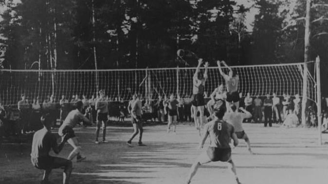
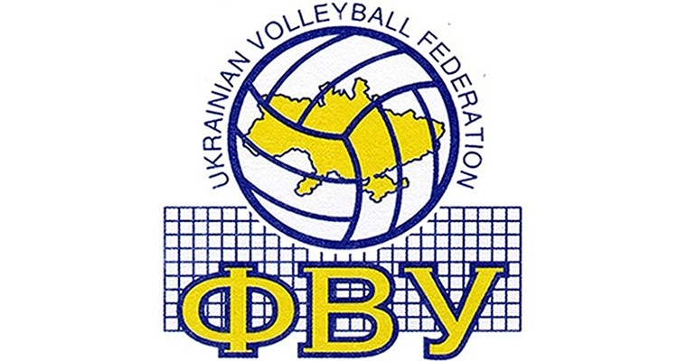
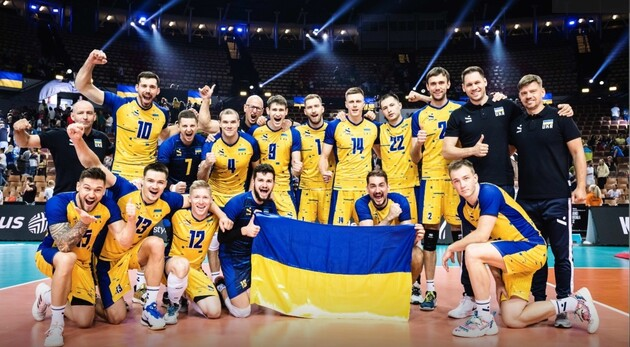

Історія виникнення волейболу та його розвиток на теренах України
- Історія виникнення волейболу
- Основні правила гри
- Розвиток волейболу в Україні
- Чемпіонат світу з волейболу 2022 року за участі збірної України
- Цікаві факти про волейбол
Історія виникнення волейболу
Винахідником волейболу вважається Вільям Дж. Морган, викладач фізичного виховання коледжу Асоціації молодих християн у місті Холиоке (штат Массачусетс, США). лютого 1895 в спортивному залі він підвісив тенісну сітку на висоті 197 см, і його учні, число яких на майданчику не обмежувалося, стали перекидати через неї баскетбольну камеру. Морган назвав нову гру «мінтонет». Роком пізніше гра демонструвалася на конференції коледжів асоціації молодих християн в Спрінгфілді і за пропозицією професора Альфреда Т. Хальстеда отримала нову назву - «волейбол». У 1916 році були опубліковані перші правила волейболу.
У 1949 році в Празі відбувся перший чемпіонат світу серед чоловічих команд.
Основні правила гри
Основні правила гри сформувалися в 1915-25 рр.. У країнах Америки, Африки, Європи практикувався волейбол з шістьма гравцями на майданчику, в Азії - з дев'ятьма або дванадцятьма гравцями на майданчику 11х22 м без зміни позицій гравцями під час матчу.
У 1922 році проведені перші загальнонаціональні змагання - в Брукліні відбувся чемпіонат YMCA за участю 23 чоловічих команд. У тому ж році була утворена федерація баскетболу і волейболу Чехословакії - перша в світі спортивна організація з волейболу. Була утворена комісія, до якої увійшли 13 країн Європи, 5 країн Америки і 4 країни Азії. Членами цієї комісії як основні були прийняті американські правила з незначними змінами: виміри проводилися в метричних пропорціях, м'яча можна було торкатися всім тілом вище пояса, після торкання м'яча на блоці гравцеві було заборонено повторне торкання підряд, висота сітки для жінок - 224 см, зона подачі була строго обмежена.
У 1951 році на конгресі в Марселі FIVB затвердила офіційні міжнародні правила, а в її складі були утворені арбітражна комісія і комісія з розробки та вдосконалення правил гри.
Розвиток волейболу в Україні
До України ж ця гра завітала 1925 року. У тодішньому Харкові мешкав професор В.Блях. Це був спортивний чоловік: якось у Москві він випадково потрапив на цю гру й не на жарт зацікавився таким дійством. Щось подібне вирішив організувати в Харкові. Професора підтримали його колеги, учні. За кілька днів у місті було зведено перші волейбольні майданчики. Почалися масові змагання, які, власне, і поклали початок розвитку волейболу в Україні.
У лютому 1926 року при Губернській раді фізкультури створюють організаційну групу з розповсюдження та розвитку цього виду спорту. Всеукраїнський спортивно-технічний комітет затвердив єдині правила. На той час у Харкові вже налічувалося близько ста команд. Створюються перші колективи в Дніпропетровську, Одесі, Києві.
В порівнянні з Радянським Союзом збірна України втратила рівень майстерності на міжнародному рівні, про що свідчить зниження позицій на Олімпіаді та на першості світу. Контроль та організацію цього виду спорту здійснює з того часу Федерація волейболу України (ФВУ).
Чемпіонат світу з волейболу 2022 року за участі збірної України
Чемпіонат
світу
з волейболу підійшов до завершення. Переможцем турніру стала збірна Італії, яка у фіналі
завдала поразки господарям - команді Польщі.
Участь у турнірі взяла також і збірна України. Чемпіонат світу з волейболу для "синьо-жовтих" закінчився з найкращим результатом в історії - українці вперше дійшли до чвертьфіналу.
Завдяки виступу на чемпіонаті світу Україна змогла показати найкращий результат в історії у рейтингу волейбольних збірних - 16-е місце. А сам турнір закінчила на найвищій 7 позиції в історії.
На чемпіонаті світу з волейболу Україна зіграла п'ять матчів, три з яких - проти Тунісу, Пуерто-Рико та Нідерландів виграла. Поразок українці зазнали лише на старті проти Сербії, а також у чвертьфіналі від Словенії.
Цікаві факти про волейбол
- Волейбол вимагає від спортсмена неабиякої фізичної підготовки, позаяк волейболіст здійснює більше як 300 стрибків під час матчу.
- Найдовший волейбольний поєдинок в історії тривав протягом 75 годин та 30 хвилин. Відбувся він у містечку Кінгстон, що у Північній Кароліні (США)
- Подача м'яча в стрибку почала широко використовуватися у волейболі після поєдинку, що відбувся в 1984 році. Саме тоді, на Олімпійських іграх, бразильська збірна постійно застосовувала цей метод у грі. Така віддача дозволила їм зайняти друге місце, і була прийнята в основні комбінації з м'ячем у даному виді спорту.
- Перший м’яч, спеціально розроблений для гри у волейбол у приміщенні, з’явився на світ у 1900-му році. Його розробила компанія Spalding Company.
- Найпотужнішою подачею в історії вважається удар, після якого м’яч летів зі швидкістю 132 км/год.